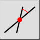
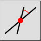
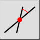
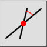

Angolo relativo
Barra degli strumenti / Icona:
 

Menù: Disegna > Linea > Angolo relativo
Scorciatoia: L, R
Comandi: linerelativeangle | lr
Questa è una traduzione automatica.
Barra degli strumenti / Icona:
 

Menù: Disegna > Linea > Angolo relativo
Scorciatoia: L, R
Comandi: linerelativeangle | lr
Con questo strumento è possibile creare linee con un angolo relativo rispetto alle entità esistenti. L'entità esistente può essere una retta o un arco / cerchio. Le linee con un angolo relativo di 0 gradi rispetto ad un arco sono tangenti o parallele alle tangenti. Le linee con un angolo relativo di 90 gradi rispetto a un arco o a una linea sono linee ortogonali.